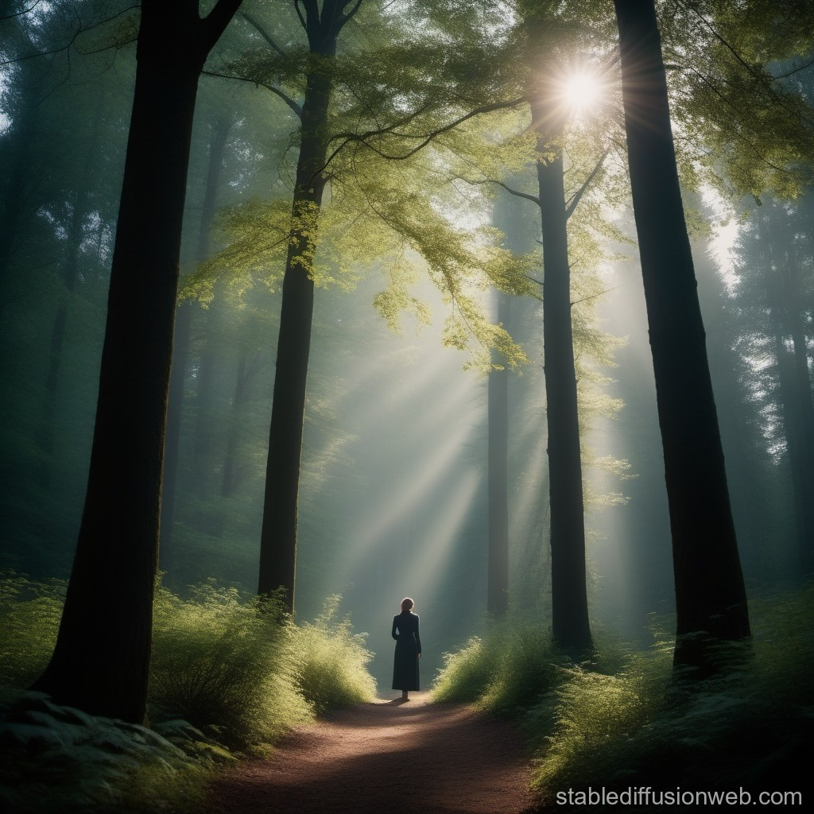

The Enchanted Forest
You find yourself standing at the edge of an enchanted forest. The trees loom tall, their branches reaching out like fingers towards the sky. The air is thick with magic, and you can't help but feel drawn into its depths. As you step forward, you realize that you have a choice to make.

CHOOSE A PATH